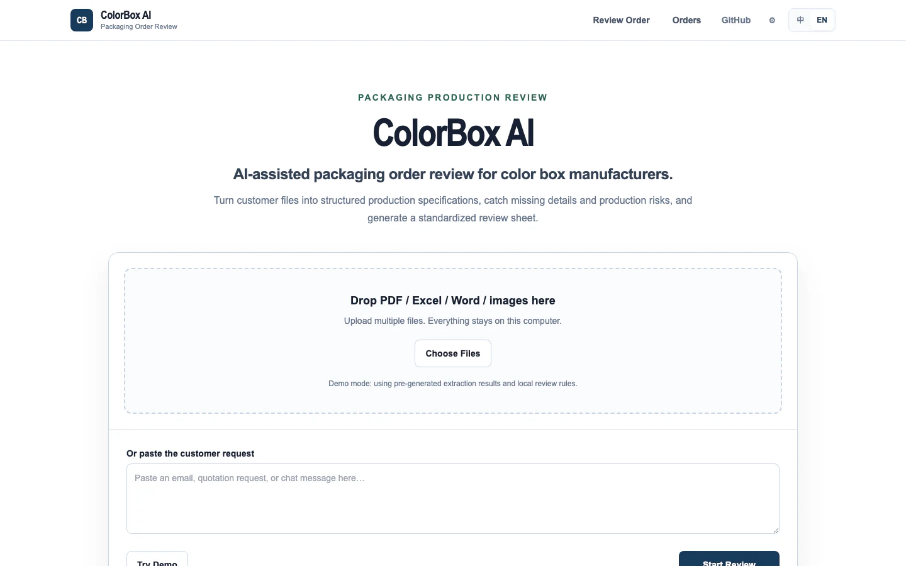

AI × Factory operationsIndependent product

ColorBox AI
From customer files to production clarity.
A business mind.
A builder’s instinct.
Turning complex questions into practical tools and clearer decisions.
Four independent products. Real problems, working systems.

From customer files to production clarity.

One workspace. From inquiry to follow-up.

Make spatial decisions explainable.

Less indecision. A better next meal.
I study Information Systems and Operations & Supply Chain Management at the University of Washington’s Foster School of Business.
My work sits between business analysis and building: AI-assisted factory workflows, export sales tools, consumer products and interpretable decision models.
AI products · Business systems
Analytics · Operations
Roles that connect business execution with structured information and practical digital tools.
Business Operations & Digitalization Associate
International Trade Data Analyst Intern
Business Intern
Foster School of Business
Bachelor of Arts in Business Administration
Information Systems
Operations & Supply Chain Management
Spreadsheet Models · Inventory & Supply Chain Management · Database Management
The Most Trendy Technology Award
UW IS 451
Dean’s List
University of Washington
Annual Dean’s List
2023–24 · 2024–25 · 2025–26
Mandarin Chinese Native
English Proficient
Turn business questions into structured evidence and interpretable findings.
Model trade-offs, constraints, uncertainty, and operating decisions.
Build practical AI-enabled research, workflow, and product experiences.
Support reliable local data flows, versioning, and automated verification.
I’m interested in roles that turn business and operational problems into useful AI products and decision tools.
hluo7@uw.edu